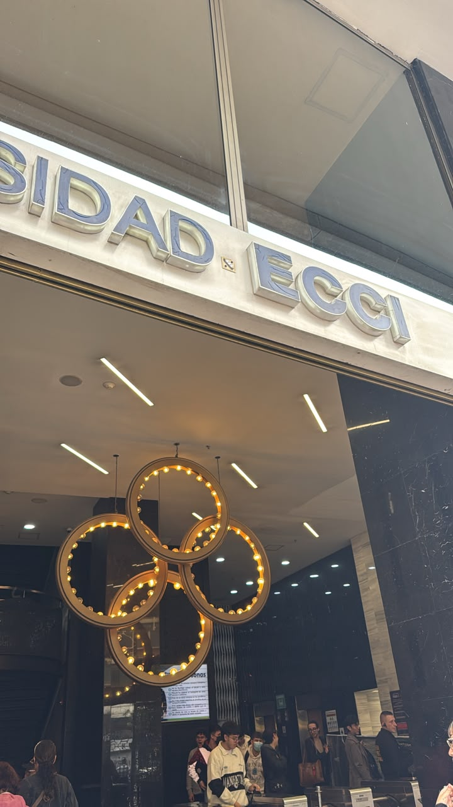
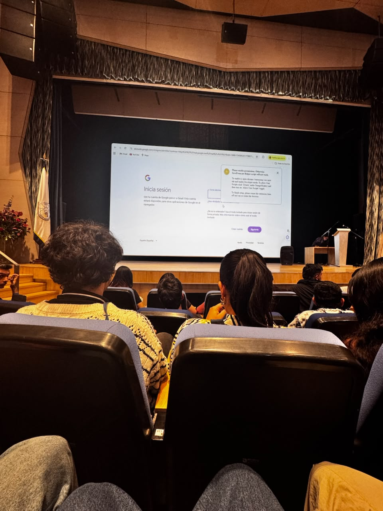
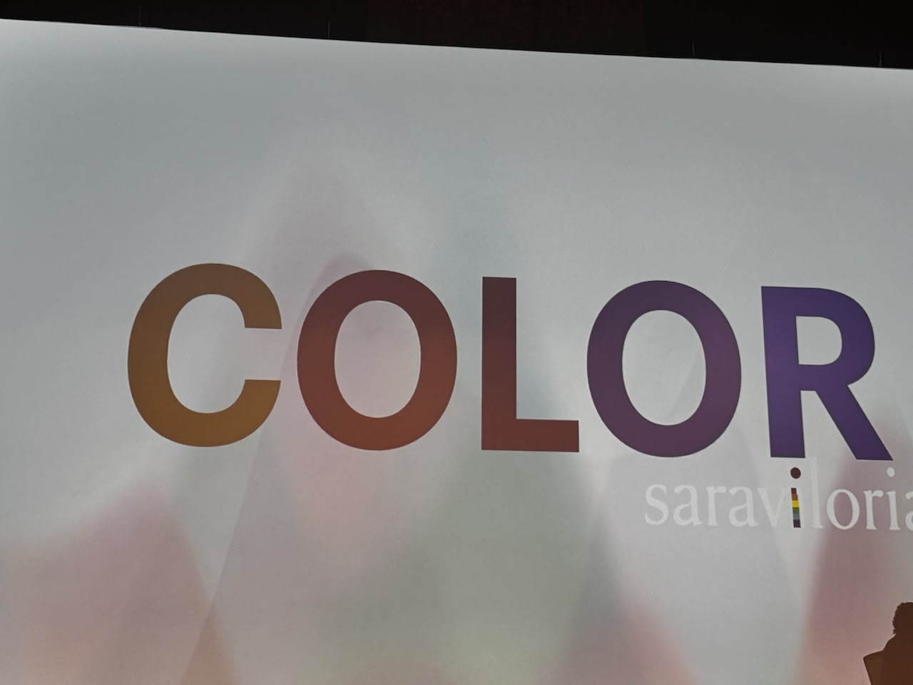
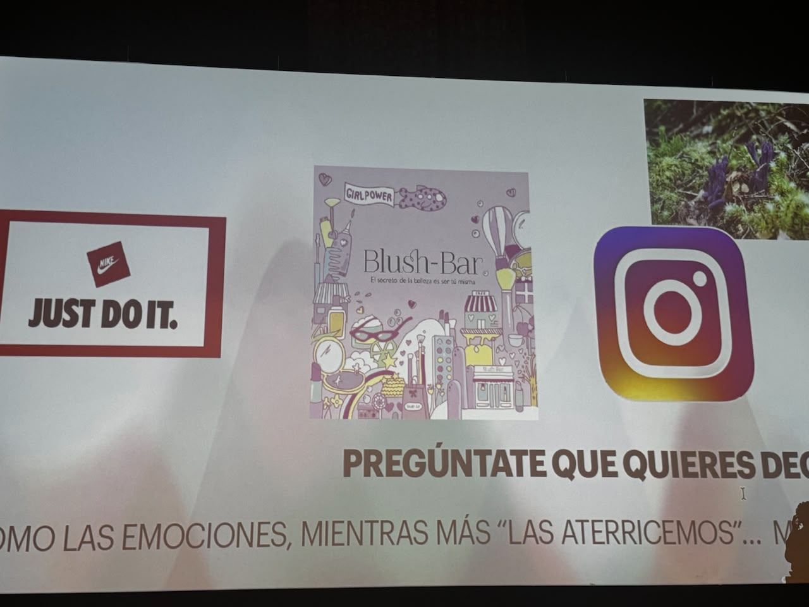
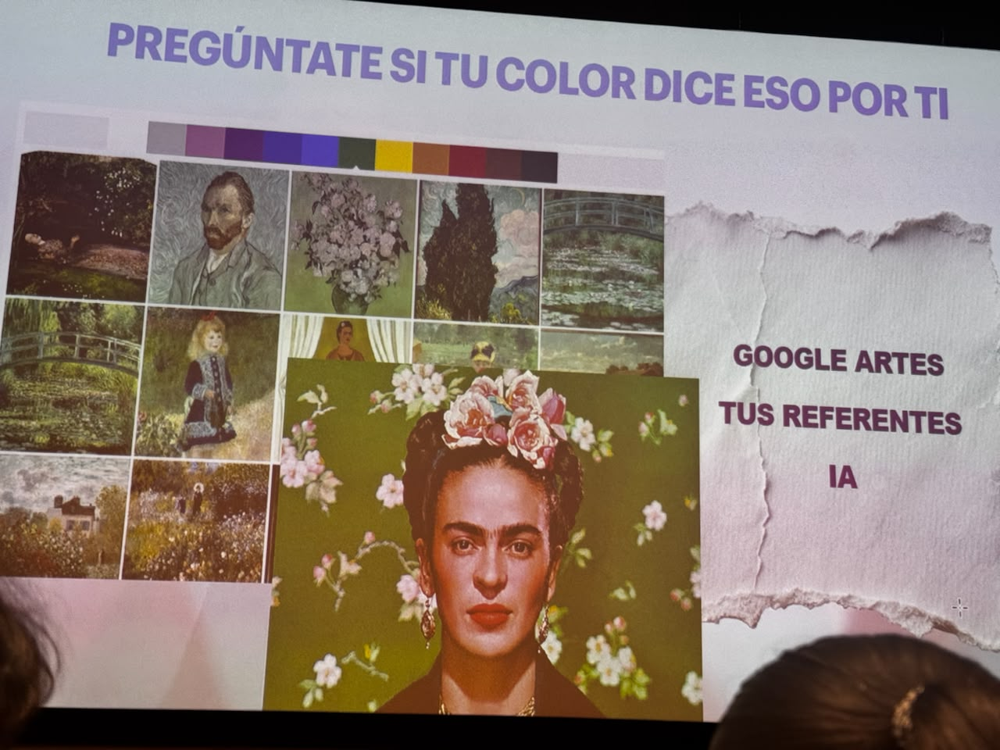

Color con intencion
Comprendi que el color no se elige solo por gusto: comunica personalidad, emociones, valores de marca y expectativas del usuario.
Universidad ECCI · Las Nieves, Bogota
Experiencia academica sobre color, identidad visual, creatividad y desarrollo FrontEnd.
Este sitio presenta mi participacion en el evento Moda ECCI, realizado en la sede de Las Nieves. La visita permitio conectar la teoria del color con el diseno de interfaces, la comunicacion visual y la forma en que un producto digital puede transmitir emociones.
Mi experiencia en Moda ECCI
Comprendi que el color no se elige solo por gusto: comunica personalidad, emociones, valores de marca y expectativas del usuario.
La conferencia mostro la importancia de investigar arte, marcas, redes sociales e inteligencia artificial para construir propuestas visuales.
En una interfaz, los contrastes, las paletas y la jerarquia visual ayudan a que el usuario entienda, confie y navegue mejor.
La industria creativa necesita herramientas digitales: portafolios, tiendas, contenido interactivo y experiencias web memorables.
Conferencia · Sara Viloria
La charla se centro en teoria del color, semiologia visual, Pantone y aplicacion del color en productos, marcas y experiencias.
Durante el evento aprendi que el color funciona como un lenguaje. Una paleta puede hacer que una marca se vea juvenil, elegante, confiable o arriesgada. Sara Viloria explico relaciones cromaticas como colores complementarios, analogos y triadas, ademas del valor de investigar referentes antes de disenar.
Tambien entendi que Pantone ayuda a mantener consistencia visual en moda, impresion, branding y productos digitales. Para ADSO, esto se relaciona directamente con la creacion de interfaces: botones visibles, fondos legibles, identidad coherente y experiencias que conectan emocionalmente con el usuario.
During the event I learned that color works as a language. A palette can make a brand feel young, elegant, trustworthy, or bold. Sara Viloria explained color relationships such as complementary colors, analogous colors, and triads, as well as the importance of researching references before designing.
I also understood that Pantone helps maintain visual consistency in fashion, printing, branding, and digital products. For software development, this connects directly with interface design: visible buttons, readable backgrounds, consistent identity, and experiences that emotionally connect with users.
Contenido multimedia





Glossary
| English | Espanol | Definition |
|---|
Conclusion
La moda y el software pueden aportar a una produccion mas responsable cuando se disenan pensando en el ciclo de vida completo. En moda, esto significa reducir residuos, reutilizar materiales y optimizar recursos. En tecnologia, significa crear soluciones digitales que ayuden a medir, informar y mejorar procesos.
Como aprendiz ADSO, esta experiencia fortalece mi formacion porque muestra que una interfaz no solo debe funcionar: tambien debe comunicar, ser accesible, ahorrar recursos y apoyar decisiones responsables. El diseno visual puede motivar habitos sostenibles cuando presenta informacion clara, atractiva y facil de entender.